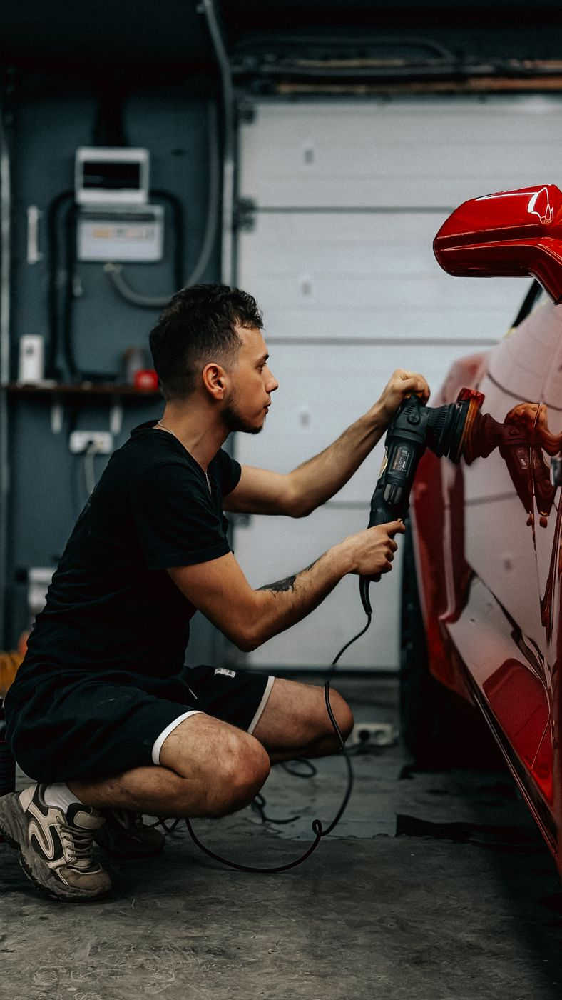
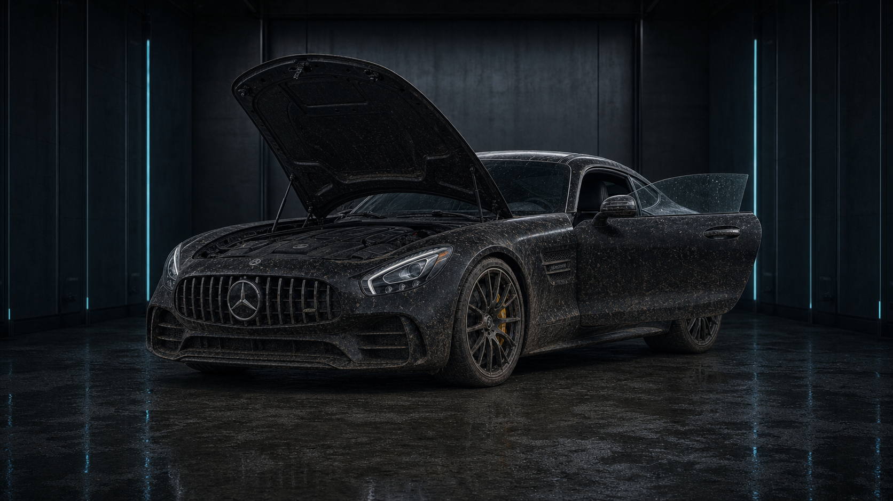
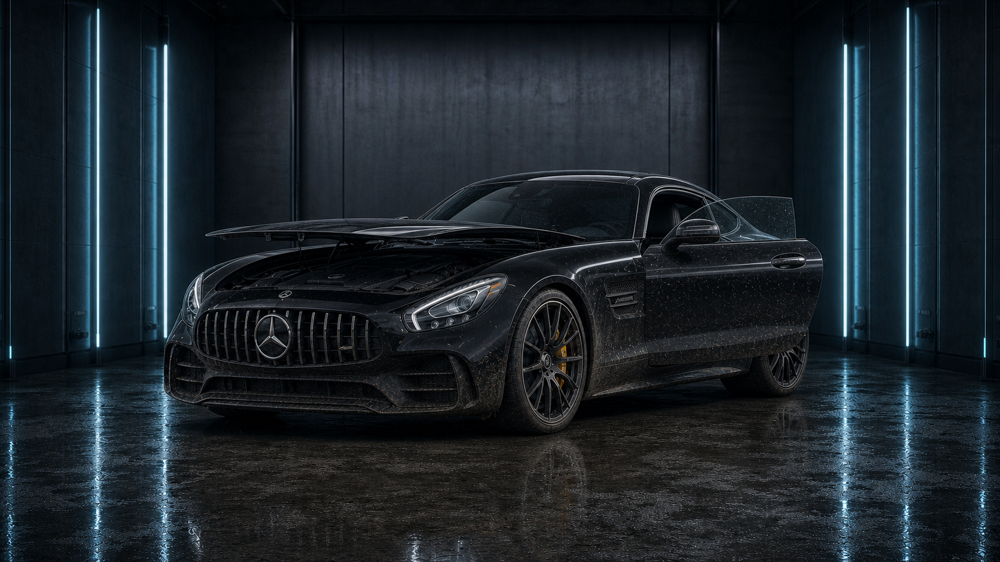
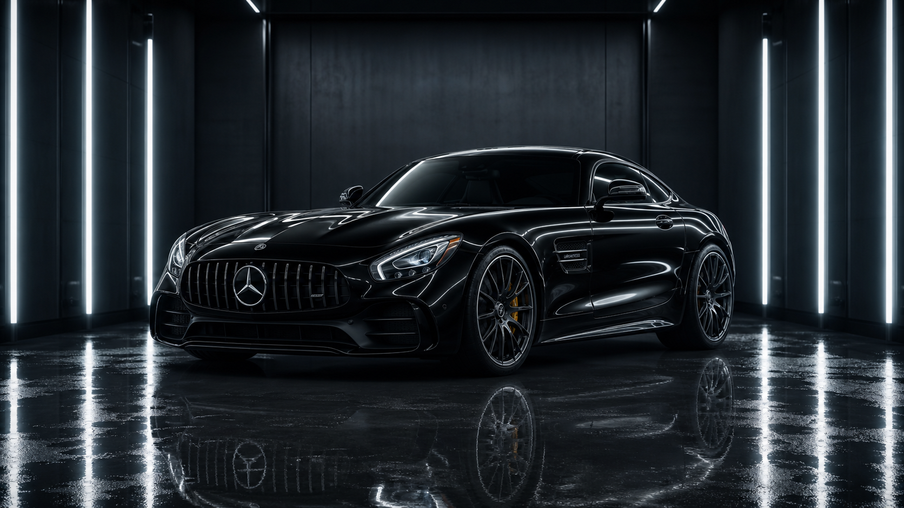
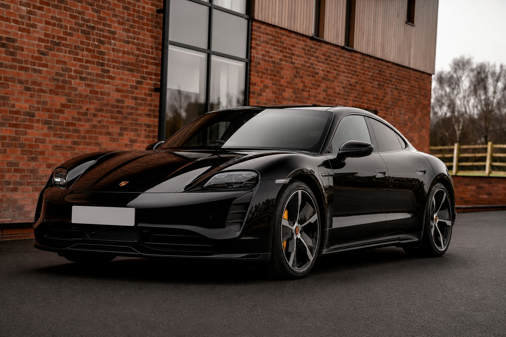
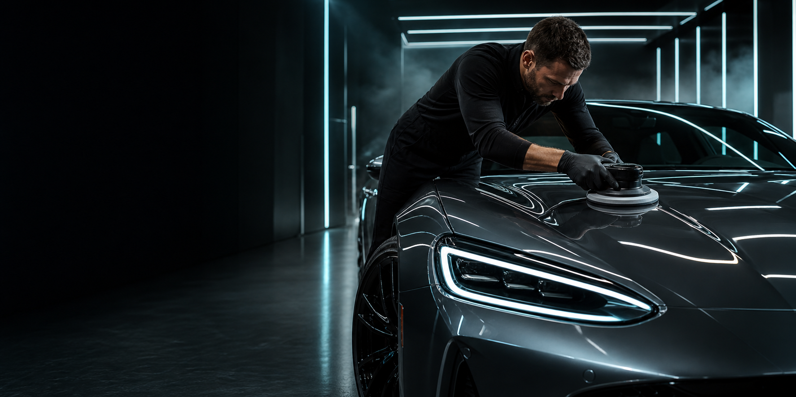

Prémium külső mosás
Előmosás, aktív hab, kétvödrös kézi mosás, felni- és gumiápolás, foltmentes szárítás.
7 990 Ft-tól
Fotó: Bulat843 / PexelsBudapest · Premium detailing studio
Külső-belső autókozmetika, fényezéskorrekció és kerámiavédelem azoknak, akik nem egyszerűen tiszta autót, hanem hibátlan megjelenést szeretnének.
Több mint autómosás
Minden autót egyedileg mérünk fel, majd a fényezés, a beltér és a használati szokások alapján állítjuk össze a megfelelő kezelést.
01 / Szolgáltatások
A gyors frissítéstől a többnapos prémium detailingig. Átlátható csomagok, professzionális anyagok és dokumentált munkafolyamat.
Előmosás, aktív hab, kétvödrös kézi mosás, felni- és gumiápolás, foltmentes szárítás.
7 990 Ft-tólPorszívózás, kárpit- és szőnyegtisztítás, bőrápolás, műanyagfelületek és üvegek kezelése.
24 990 Ft-tólEgylépcsős vagy többlépcsős gépi polírozás a karcok, hologramok és oxidáció eltávolítására.
49 990 Ft-tólHosszan tartó hidrofób védelem, mélyebb szín és könnyebb tisztíthatóság akár 36 hónapig.
79 990 Ft-tólAnyagspecifikus mélytisztítás, folteltávolítás, kondicionálás és antibakteriális kezelés.
19 990 Ft-tólKímélő, biztonságos tisztítás, kényes alkatrészek védelme és prémium felületápolás.
14 990 Ft-tól02 / The transformation



03 / A folyamat
Az autó minden esetben állapotfelméréssel indul, és csak az Ön jóváhagyása után kezdjük meg a munkát.
Fotódokumentáció, festékréteg-mérés és személyes igényfelmérés.
Előmosás, vegyi és mechanikai tisztítás a teljesen tiszta alapfelületért.
A fényezés, beltér és részletek célzott helyreállítása.
Védőréteg, minőségellenőrzés és személyes ápolási tanácsadás.
05 / Referenciák
Válogatás külső-belső detailing, polírozási és felületvédelmi munkáink hangulatából.





05 / Miért Shinecraft?
06 / Demo értékelések
„Az autó fényezése szebb lett, mint amikor átvettem a szalonban. Pontos kommunikáció és elképesztő részletesség.”
„A világos bőrbelsőt teljesen újjávarázsolták, még a makacs foltok is eltűntek. Profi, kulturált csapat.”
„A kerámiabevonat óta sokkal könnyebb tisztán tartani az autót, a víz egyszerűen lepereg róla. Nagyon látványos.”
A fenti értékelések kizárólag a bemutató weboldal vizuális demonstrációját szolgáló mintaszövegek.
07 / Csomagok
A pontos ár az autó méretétől és állapotától függ. Felmérés után minden esetben tételes ajánlatot adunk.
08 / Gyakori kérdések
Ha más kérdése van, írjon vagy hívjon bennünket — segítünk kiválasztani az autójához illő kezelést.
Az autó állapotától és a választott csomagtól függően általában 6–10 óra, összetett fényezéskorrekciónál 2–3 munkanap.
Igen, minden munkát előre egyeztetett időpontban végzünk, így garantálható a szükséges idő és kapacitás.
Festékréteg-méréssel, megfelelő gépekkel és kontrollált eljárással dolgozunk, ezért a kezelés szakszerűen teljesen biztonságos.
A választott rendszertől és az utóápolástól függően 12–36 hónapig biztosíthat látványos hidrofób védelmet.
A kiszámítható eredmény érdekében saját, tesztelt professzionális termékrendszerünkkel dolgozunk.
09 / Kapcsolat
Küldje el elérhetőségét és a kívánt szolgáltatást. Egy munkanapon belül visszahívjuk egy rövid egyeztetésre.